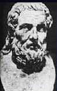

|
The Romans, like the Greeks, were fascinated with stories of the marvelous. Pliney the Elder asserts he collected 20,000 theurgical incidents taken from the writings of a hundred different authors. Historians such as Herodotus, Tacitus, Suetonius, Plutarch, and Titus Livius relate many such incidents in the lives of prominent men. Cicero, (106-43 BC), known as Rome's greatest orator, wrote a book, Divination, in which he discusses the evidence pro and con for the accuracy of predictions. He attempts to take an impartial philosophic stance to the evidence. Inquiring into the nature of fate, he asks what use predictions are if the foretold events cannot be changed. How does free will fit into this picture? Cicero implies that for some events fate and determinism rule while for other categories of events men exercise an amount of free will. The use of puns in prophecy finds a striking illustration in a story related by Tacitus about Vespasian before he attained the throne of the Roman Empire. Disturbed by several miraculous healings which occurred in his presence, Vespasian had decided to consult the oracle. Entering the temple, he ordered everyone to leave. Suddenly, while his attention was turned to the god, he noticed behind him one of the principle Egyptian priests named Basilides, whom he knew to be several days' journey from Alexandria, and ill in bed at the time. Leaving the temple he went out into the streets and enquired if Basilides had not been seen in the city; finally he sent horsemen to the place where this priest lived, and learned that at the time he saw him Basilides was eighty miles away. Then he was forced to admit that he had really been favored with a vision: the word Basilides (from a Greek word for king) meant that he would attain to empire. The great historian Plutarch (born 47 AD) held that the human soul had a natural faculty for divination and added that it must be exercised at favorable times and in favorable bodily states. He described the daemon of Socrates as an intelligent light that resonated with Socrates because of his inner light. Plutarch also viewed such spirits as the mediators between god and men. Plutarch reports for example that Calpurnia, Caesar's fourth wife, dreamt on the eve of the fatal Ides of March, that she saw her husband's blood being spilled. A comet and also many other portents ominously forewarned of Caesar's death. The philosopher, statesman, and playwright Seneca (4 BC - 65 AD) saw the emerging scientific outlook as a plausible substitute for existing religions and as a basis for a moral philosophy.
He accepted divination in all of its forms, but stressed the personal inner growth of the scientist: "Those secrets [of nature] open not promiscuously nor to every comer They are remote of access, enshrined in the inner sanctuary." Seneca was an extraordinary historical figure who was largely instrumental for introducing Stoic philosophy to the Roman world. I personally view his moral outlook as particularly appropriate for our own times. Like Socrates, he exemplified principle that a deep understanding of consciousness emerges as much (or more) from self-development than from logical inquiry. Pliny the Elder wrote his Natural History in 77 A.D. It contains 37 books investigating most of the ancient arts and sciences. In this work, Pliny posits a stance which is often found in the writings of scholars since his time. He brands the magi of his day fools and imposters. Yet nonetheless he also deems certain "magical" procedures proved by experience. He recognizes the importance of the right spirit in science and offers frequent advice on chastity, virginity, nudity and fasting. Sometimes he urges physicians to be totally silent. He also speaks about sympathies and antipathies between various material objects, and uses this idea as the basis for many medical treatments. He acknowledged that the positions of the sun and the moon were important for such treatments. One of the fathers of medicine, Galen, (born 129 AD) began to study philosophy but turned to medicine at the age of seventeen because of a dream his father had. He innovated many medical practices and left us about twenty volumes of medical treatises, averaging one thousand pages each. He was the first to recognize the physiological symptoms of emotional states, such as the quickening of the heart beat of those who are in love. He refused to accept supernatural influences in medicine and felt that all his remedies were shown by experiment and experience and were naturally understandable. Galen recognized the value of using dreams for diagnosing illness as well as for predicting the future. He accepted the doctrine of occult virtues in medicine that were the property of the substance as a whole and not any part of it that might be isolated. These virtues were discovered through contemplation on a given substance. In 150 B.C. the Romans passed a law declaring
that no important resolution could be adopted without consulting the augers.
Apollonius of Tyana  Apollonius of Tyana Approximately 217 A.D., Philostratus composed the Life of Apollonius at the request of Julia Domna, the learned wife of the emperor Septimus Severus who possessed documents belonging to Damis of Ninevah, a disciple and companion of Appollnius. Philostratus used the will and epistles of Apollonius and also personally took the trouble to visit the cities and temples Apollonius had frequented in his lifetime about a hundred years earlier. Apollonius was a Pythagorean philosopher whose miracles in raising the dead and healing the sick have been compared to those Christ performed. During his travels he associated with the Brahmins of India and also the Persian magi. In Rome he was arrested and tried before the emperor Domition for sorcery, because he had managed to predict the plague at Ephesus. He claimed it was merely his moderate diet that kept his senses clear and enabled him to see the present and the future with an unclouded vision. Philostratus implied that Apollonius managed to inexplicably vanish from the courtroom. Apollonius believed that health and purity were a prerequisite for divination. His life was also guided by dreams; and he would interpret the dreams of others as well. He would not sacrifice animals, but he enlarged his divinatory powers during his sojourn among the Arab tribes, by learning to understand the language of animals and listen to the birds -- for animals and birds seemed to predict the future. He would also observe smoke rising from burning incense. His ability to detect and deal with demons
is illustrated in the story of a lamia (which has become immortalized in
a poem by Keats) or evil demon which he disposed of through his penetrating
insight. In fact, he was held with such awe by his disciples that they
believed him to be a daemon or demigod.
References . Tacitus, Historia, Lib. IV, p. 81. This passage was quoted in Ceasare de Vesme, A History of Experimental Spiritualism. . Lynn Thorndike, A History of Magic and Experimental Science, Vol. I. New York: Columbia University Press, 1923. This magnificent treatise is the authoritative work in its field. It contains eight volumes which were written over 35 years. If not otherwise noted, much of the material from this chapter through Newton, can be traced to Thorndike. |